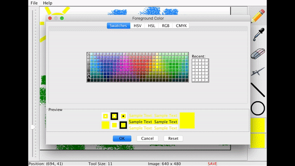
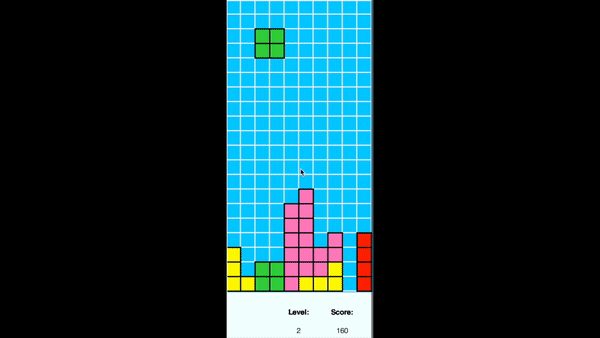

Hi, I'm Vivian, an environmental enthusiast and student programmer.
About
Hi, I'm Vivian! I'm a sophomore studying Computer & Information Sciences at Cornell University in Ithaca, NY. I'm also a developer who is interested in software engineering and full-stack engineering. I have experience in a multitude of programming languanges, such as Java and Python, and fields, such as software development, web development, and product design.
I'm looking for a software development internship in a challenging and collaborative team environment. I'm really hoping to test all of the skills I've learned in my classes and extra curricular activities from my time in college, and expand upon them wherever I find myself working.
Check out some about me!
×
Fun Facts!
Taken during one of the most memorable trips of my life, at White Sands National Monument in White Sands, NM
I grew up in the San Francisco Bay Area but go to school in New York, making it an incredibly difficult decision to choose my favorite coast.
My most recent Myers Briggs test result is ESFJ, but in the past year, I've gotten both ENFJ and ISFJ.
I've blogged every single day (minus 3) since January 3, 2015.
My body is part titanium - I tore my ACL playing competitive volleyball and had to get surgery to get it replaced.
I love traveling! My favorite locations so far have been: Texas (Big Bend National Park), New Mexico (Carlsbad Caverns, White Sands National Monument), Boston, and Yosemite.
I'm a used-book hoarder - my favorite books include Cloud Atlas, Invisible Man, 1984, and Joy Luck Club.
I'm trilingual: I speak English, Chinese, and French.
The top 4 words my friends used to describe me are: reflective, independent, dependable, and caring.
Cornell University Sustainable Design | September 2017-Present Currents CS Team Lead, Software Developer
Collaborated with the other subteams to create a final application that controls the HVAC systems of rooms and laboratories on campus for optimal energy usage
Managed the Currents Computer Science team in the development of the iOS Application, prediction algorithm, and server
Implemented the server through which all of the data used in the prediction algorithm is processed and then outputted to a microcontroller for the HVAC system, using Node.js
Conceptualized, designed, and implemented a new centralized active member and alumni database for hundreds of present and past CUSD members to use, using Sketch, Node.js, HTML, and CSS
Specialized in backend website development for the database and implemented features such as file uploads, data storage, and data retrieval using Google Firebase
Canfield Lab | January 2018-Present Data Analyst, IT
Analyzed data for a child development study conducted in India researching the effects of child intake of iron and zinc biofortified pearl millet in their grwth and immune functions
Compiled incoming data from videos using Adobe Premiere and specialized in Boris (Behavioral Observation Research Interactive Software) in order to render the data usable for a team of scientists
The Research Paper | August 2017-Present Lead Designer
Designed the entirety of the content for The Research Paper, the largest undergraduate research magazine at Cornell
Organized the design team through team meetings and created centralized layouts for members to apply, using Adobe InDesign, Photoshop, and Illustrator
Batt Lab | April 2017-September 2017 Researcher
Created PowerPoint presentations and took pictures using a Nikon D200 for a live Disney exhibition that taught children about the different applications of nanotechnology
Developed and tested protocols for the identification of various fungal and bacterial samples shipped to the lab from domestic and international clients
Used lab techniques such as Microscopy, DNA extraction, PCR, DNA Purification, and Sequence Analysis
Chinese Students Association, Social Chair Cornell Environmental Collective (ECO), Community Development Team Alternative Spring Breaks, Harlem Grown Trip Participant Empathy, Assistance, and Referral Services (EARS) Trainee Cornell College of Arts and Sciences Peer Advisor
Hackathons
Technica, University of Maryland: re(source), an app that unites the community during natural disasters The app allows users to post updates and to ask for any resources they need, such as matches and water, directly connecting them with neighbors who offer their supplies. It also allows users to report on the inventory of nearby stores so that people can be informed before heading out the door in search of more supplies.
Health Hackathon, Cornell University: tran.z.ent, a sleep app that connects patients with medical care providers (MCP) The app detects the patient's heartrate while they are asleep and compares it against the recorded heartrates associated with common causes of disturbed sleep such as asthma and sleep apnea. If the patient's sleep patterns raise concerns, then the app alerts the patient's MCP of their condition and allows for easy contact between patient and MCP.
Projects
Programming
Web Development
×
Spaceship Rescue: Shortest Path Optimization
This was by far one of my favorite coding projects, done in Java. The setting: a spaceship trying to get to Planet X from Earth in the shortest path possible, then trying to return to Earth while collecting the most gems on the way and staying within the allotted fuel. From first glance, it wasn't difficult to complete the project at all; I already knew how to write Dijkstra's shortest path algorithm. Next, came the million-dollar question: how would I optimize the shortest path algorithm, i.e. how would I collect the most gems and still make it back to Earth? After multiple ideas and different sets of code, the final version I settled on was to visit the neighboring planet with the most gems, making this a greedy algorithm, while calculating at each planet if I would have enough fuel to make it back to Earth.
×
Paint App

This project really challenged the (lack of) artistry in me: I implemented a paint program using the Java graphical user interface (GUI) API. I coded pencil, eraser, eyedropper, airbrush, line, circle, zoom, and color tools into the interface and took into consideration many of the specifics of each tool (e.g. the number and randomization of dots in the airbrush tool). When the program was completed, I was even able to create this wonderful masterpiece!
×
Tetris

Tetris is my favorite game and I had a blast coding my own version as well. Not only did I have to work with the graphics in Python but I also had to determine each stage of coding the game, from creating each individual block, to timing the falling of the blocks, to updating the scores & speed, and a lot more. It was an elaborate project but was so rewarding to complete and to be able to play! (P.S. I'm level 103 on Tetris Battle.)
×
Apple Harvest Festival Website Redesign
My first large project in web design was to redesign the website for the annual Ithaca Apple Harvest Festival. I started the redesign with a blank piece of paper and a pencil, sketching and user testing my sketches until I was satisfied with both the functionality and design of the site. From there, I used HTML and CSS to create and style the content of the site, JavaScript to write and validate a feedback form, and PHP to connect the framework of the site and do serverside validation of the form. Check out my code here!
×
Hearsay A Cappella Website Design
In my Web Design & Programming Course, our final project was to create a website for a client in the Ithaca community; my team of three chose to create the site for Hearsay A Cappella. On the team, I served as the project manager by managing team meetings and delegating tasks over the course of the project. I also taught my team how to use GitHub so that we could collaborate efficiently on the project. Regarding the content of the site, I took on the pages that required developing the backend framework and programming using JavaScript and PHP. The specific pages that are completely mine are: index.php, current_members.php, alumni.php, contact.php, faq.php. With the team, together, we designed the website from scratch and conducted multiple rounds of user testing. Every week at our team meetings, we would also talk through the design and functionality of each page, and edit accordingly, until we were able to finalize a version we were all satisfied with. Check out our code here!
×
CUSDHub
On the Technical Operations team of Cornell University Sustainable Design (CUSD), we took on the creation of an alumni and active member database in only one semester. This task started straight from the drawing board: a completely blank piece of paper, an empty frame in Sketch, and an empty file of code. However, through brainstorming, scribbling rough sketches, creating wireframes, user testing and revisiting the drawing board, writing pseudocode, and finally implementing the pseudocode, we were able to create a final product with many well-thought out features. My role on the team was primarily in the backend development of the website, in features such as file storage and retrieval. I also did a few rounds of user testing and some frontend development as well.
We faced several problems throughout the implementation of the database, such as deciding on how to sort the members and having conflicts merging our code without overriding each other, but were ultimately able to complete a beta version in only a few months.
Contact
Please feel free to contact me for any more information!